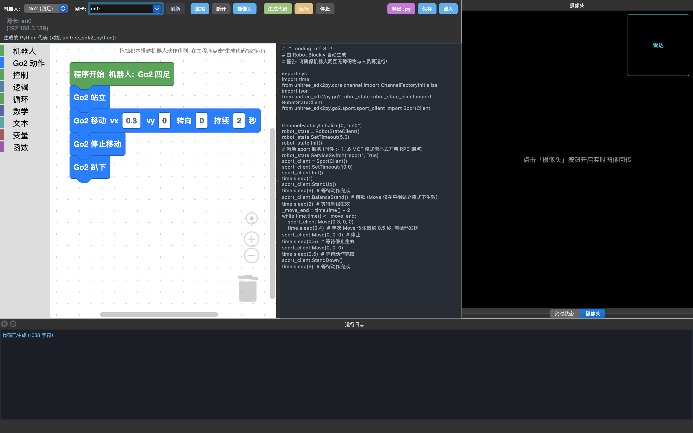

Robot Blockly
v0.1.1 公测版 · 现已开放下载
拖拽积木即生成 Python，一键驱动宇树 Go2 站立、行走、回传画面——不必手写一行 SDK 代码。

能力
编辑器、代码生成、运行控制与设备遥测不再分散在多个工具之间。打开 Robot Blockly，从想法到机器人动起来，就在同一个界面里完成。
Blockly 积木画布，循环与条件自由嵌套，动作序列所见即所得。
积木一键翻译为可读 Python，直接调用 unitree_sdk2py，随时导出 .py。
生成即可执行，输出实时回流底部日志面板，不必切换终端。
DDS 订阅 rt/lowstate，IMU、电池与电机温度尽在掌握。
点击「摄像头」，机器人视角实时显示，方便对位与调试。
叠加 Go2 激光雷达点云与测距标尺，环境感知一目了然。
XML 工程保存与载入，迭代与协作有迹可循。
macOS Intel / Apple Silicon 与 Linux x64 分别构建，互不混用。
演示
一段完整实录：在 Go2 真机上，从搭建积木到程序执行，全程不过几分钟。
视频托管于哔哩哔哩：在 B 站观看
下载
浏览器会预选你当前的系统与芯片；拿不准时，参照下方系统要求手动选择即可。
Intel 与 Apple Silicon 的安装包互不通用，请按芯片型号选择。
本软件未做 Apple 开发者签名与公证（无开发者证书），首次打开会被系统拦截。任选一种方式即可正常运行：
xattr -dr com.apple.quarantine /Applications/RobotBlockly.app
安装步骤：双击挂载 .dmg → 将 RobotBlockly.app 拖入「应用程序」→ 弹出磁盘。
仅适用于 Intel x86_64 芯片机型，与 Apple Silicon 版本互不通用。
支持 M1 / M2 / M3 / M4 系列芯片，原生 arm64 安装包正在打包中。
amd64 架构；需具备与机器人通信的有线网口。
通用要求：与机器人处于同网段；Go2 固件 ≥ 1.1.6（MCF 模式）。
连接
Go2 出厂固定 IP 为 192.168.123.161，不提供 DHCP。有线直连时，把电脑网卡通配为静态 IP 192.168.123.241/24 即可握手；软件内置网卡检测与一键配置（Linux）。
在下载中心自动识别系统，或手动选择 macOS / Linux 对应安装包。
电脑有线口接 Go2，按右侧命令通配静态 IP，与机器人同网段。
生成 Python 后点击「运行」，底部日志实时反馈执行结果。
# Linux
sudo ip addr add 192.168.123.241/24 dev <网卡名>
# macOS
sudo ifconfig <网卡名> 192.168.123.241 netmask 255.255.255.0运动控制需先调用 BalanceStand() 解锁，再发送 Move 指令；Go2 固件需 ≥ 1.1.6（MCF 模式）。
开源
本项目在构建与运行时引用以下开源组件，其版权归各自作者所有；本软件仅引用上述组件，不包含对第三方代码的修改与再分发。
| 组件 | 来源 | 协议 |
|---|---|---|
| unitree_sdk2py | 宇树官方 Python SDK | BSD-3-Clause |
| Blockly | Google 开源积木编辑器 | Apache-2.0 |
法律
本软件为作者独立创作，与宇树（Unitree）公司及其关联实体不存在任何隶属、合作或代理关系，亦未从该公司获得任何形式的授权、赞助或技术支持。
本软件仅用于技术研究、学习与交流目的。使用本工具操作任何机器人所产生的全部风险与后果，均由使用者自行承担。使用前请务必阅读完整免责声明。